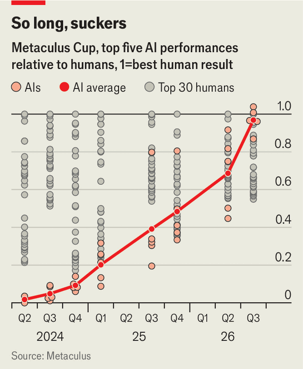

Artificial intelligence now beats some of the best human forecasters
Crystal balls give way to LLMs

Sep 17th 2026
On September 5th yet another domain of human intelligence fell to the artificial variety. For the first time an AI won the seasonal Metaculus Cup, a proving ground for forecasters of a wide variety of events. Not only that, other AIs took the second and fifth places, leaving third and fourth for humans.
Hundreds of entrants had predicted the outcomes of questions that would be resolved by September. Would an American state or EU country restrict data-centre development? Would the hantavirus outbreak affect at least five people who were not passengers on MV Hondius? How much would Brent crude cost? The participants were scored on the distance of their prediction from the true answer. Those that were closest for longest won the greatest number of points.

The human participants in the competition shared a $5,000 cash prize in proportion to the number of points that they picked up. But this sum is actually less than the fifth-placer had achieved in the real world. By betting on questions on which its AI thinks the market is wrong, FutureSearch has seen a 6% increase since June on the initial $100,000 value of its portfolio on Kalshi, a popular prediction market. Even that, though, is chump change compared with the performance of one of the developers behind Preseen who, despite his firm failing to make the top five in the competition, had turned $35 into $1.94m over seven months, the sixth-best return in Kalshi’s history.
Computers have long been used to make forecasts in narrow fields, such as the weather. But AI forecasters, like those on Metaculus, are a different breed. Instead of being trained specifically on data regarding the questions they are predicting the answers to, they are built using the same large language models (LLMs) that underpin the rest of the AI boom.
These bots therefore read the news and make sense of data in much the same way that human forecasters manage—except they do so far more broadly and swiftly. This lets them explain the reasoning behind their forecasts explicitly, a useful trait when persuading decision-makers to take their bets seriously.
Soothsayers, from astrologers to racing tipsters, have been around for the whole of human history. The modern business of forecasting, however, has numbers attached to it, making it easier to weed out the charlatans and no-hopers.
A study published in 2015, in Perspectives on Psychological Science, by Barbara Mellers of the University of Pennsylvania and her colleagues, found that superforecasters—the best in the field—could discriminate between events that would and would not happen 300 days in the future as reliably as regular forecasters could manage those 60 days away. An analysis in July by the Forecasting Research Institute, where Dr Mellers is a scientific adviser, suggested AI systems have now reached parity with the superforecasters on an evolving set of forecasting questions.
A lot of this improvement has been driven by the same thing that is driving AI’s progress in other domains: a handful of companies spending huge sums to scale up LLMs. The best systems of all, however, are built by startups and tinkerers using some extra tricks. One is to combine LLMs from different firms to investigate different parts of a forecasting question, assemble the necessary data and debate among themselves the correct response.
Mantic, a British startup, gives its AI esoteric datasets to which the publicly available AI models made by companies such as OpenAI and Anthropic do not have easy access, because they are behind paywalls. Preseen, meanwhile, is trying to score news pundits’ track records to decide which to incorporate into its forecasts.
And the startups can do something that no human forecaster can manage: wipe their bot’s memory. By giving their AIs snapshots of past data, owners can see how changes in the instructions and information they feed to their bot would have altered predictions of a past event. That lets them re-run the process on the same questions, and learn from their mistakes, as often as they like.
Even so, it is unclear whether these bells and whistles are decisive factors giving AIs their edge over human forecasters. The actual winner of the latest Metaculus Cup was a bot developed by Jeffrey Liang, a self-described polymath who lives in Texas. He spent, by his reckoning, less than 150 hours and a couple of thousand dollars on computing power and data to develop his AI. He beat four startups that have raised more than $15m between them, and his bot is currently leading another, AI-only, competition run by Metaculus. This one has a $50,000 prize pool.
The human forecasters who enter Metaculus’s competitions are not necessarily the world’s best. And the cup, which has a four-month time horizon, does not test the ability to forecast over periods of years, which for many institutions is important.
In that domain human judgment still provides an edge, reckons Yann Riviere, a forecaster at Mantic, although competent AI forecasters have not been around long enough to test this rigorously. Nor is the divide between humans and machines clear-cut. Human forecasters already use AI to help with the vast amount of research needed to make a prediction. Mr Riviere, for example, says that he treats his firm’s AI as if it were another professional forecaster helping him improve his predictions.
As AIs continue to improve, that balance will probably switch. Humans will retain the ability to collect information in the real world. AIs’ growing processing power will let the machines synthesise more of those inputs than a human ever could.
In the meantime, AIs are making it easier for everyone to predict the future. A forecast from human superforecasters can cost more than $10,000 and take a week. FutureSearch asks for ten minutes and a few dollars—though other startups, selling their services to hedge funds and governments, are no doubt charging more.
All of which leaves open how far forecasters—human and machine—are from the theoretical limit of what can be known about the future. Weather forecasts, for example, become random about 15 days out because of the chaos inherent in the atmosphere. If AIs continue to improve they may thus, counterintuitively, reveal how much of the future is truly unknowable and how much merely so far unknown. ■